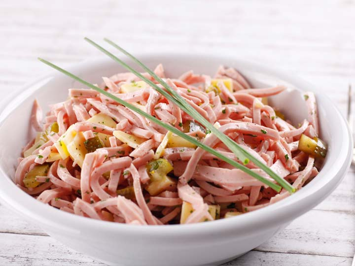

Wurstsalat

German cheap, easy to make and quite delicious dish
This is a German bologna salad that is really easy to prepare. Bologna,
pickles, tomatoes, and chives in a charming vinaigrette dressing.
Ingredients
- 1 German bologna block
- ½ cup distilled white vinegar
- 2 tablespoons vegetable oil
- 1 small onion, finely chopped
- 1 tomato, thinly sliced
- ½ teaspoon minced garlic
- ½ teaspoon minced fresh chives
- ½ teaspoon minced fresh parsley
- 4 Polskie Ogorki (Polish Dill Pickles)
Steps
-
Slice bologna into 1/4-inch thick slices, and then into 1/4-inch strips
going down the entire length of the block. It should look like big
spaghetti. Place in a serving bowl.
-
Whisk together vinegar and oil in a medium bowl. Stir in onion, tomato,
garlic, chives, and parsley. Slice pickles lengthwise into spears and
add them to the dressing. Pour over bologna, and stir to coat. Cover and
refrigerate for 2 hours before serving. Serve cold.
Return Home